GGA training session 3 – Trial Protocols and Best Data Practices
Curtin Biometry and Agricultural Data Analytics
September 5, 2024
On-Farm Research Success
- Ask the Right Question (refer to Mark’s session this AM)
- Ask what data will be collected
- Consider paddock history and variation
- Pick the right trial design (refer to Point 3 above & previous session)
- Include a control treatment for a baseline!
- Replicate and randomise (refer to previous session)
- Collect the data
- Share the raw data with AAGI
Ensuring You Have Quality Data
- Ensure the trial design is valid and fit for purpose.
- Ensure the trial design is recorded correctly.
- Identify and control sources of noise.
- Implement protocols to avoid mistakes in running the trial and recording of observations.
- Always provide the raw data to the biometrician.
- Record ancillary details.
Don’t Optimise for Convenience
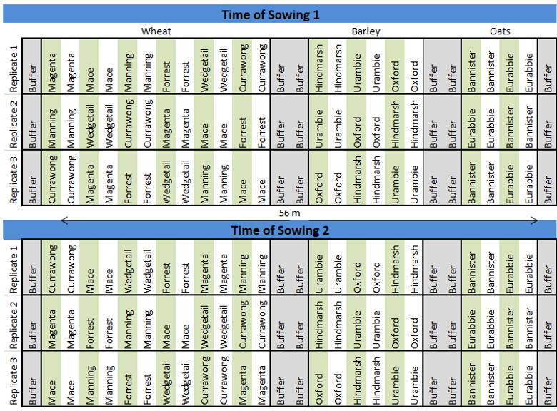
Don’t Optimise for Convenience
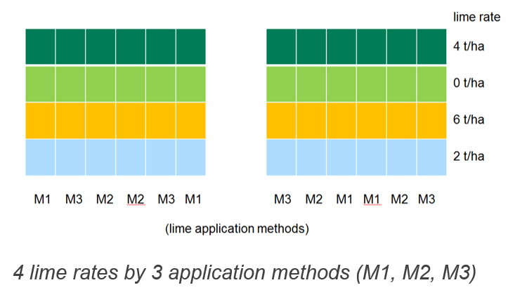
Ensure the Design is Recorded Correctly
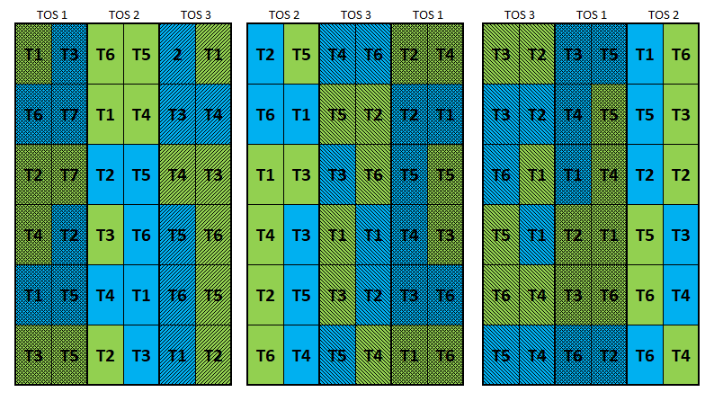
Ensure the Design is Recorded Correctly
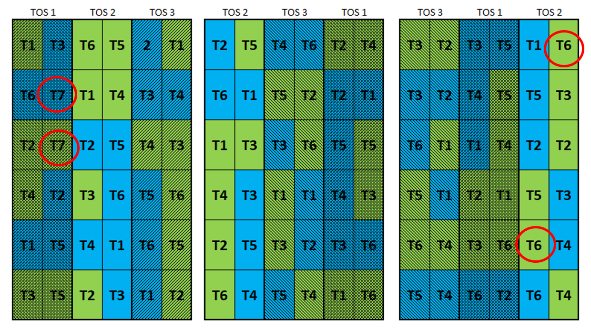
Controlling Measurement Error and Uncertainty
Controlling Measurement Error and Noise
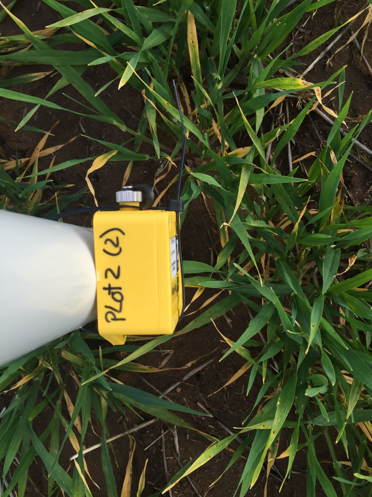
Controlling Measurement Error and Noise
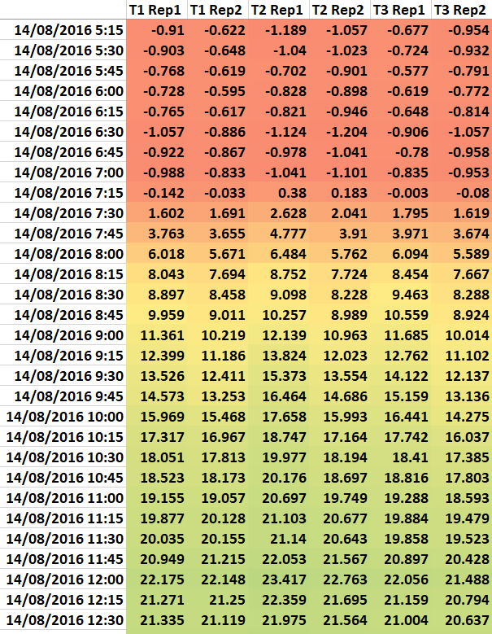Source: Dr Karyn Reeves, SAGI-West
Controlling Measurement Error and Noise
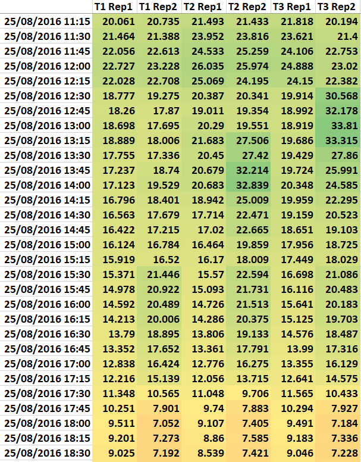
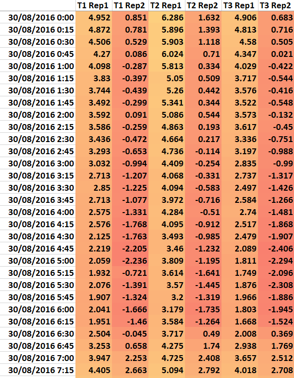
Always Provide the Full Set of Raw Data
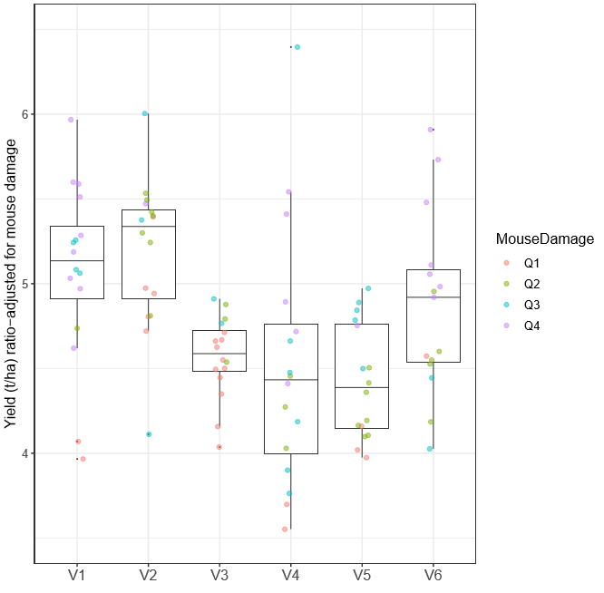Source: Dr Karyn Reeves, SAGI-West
Record Ancillary Details
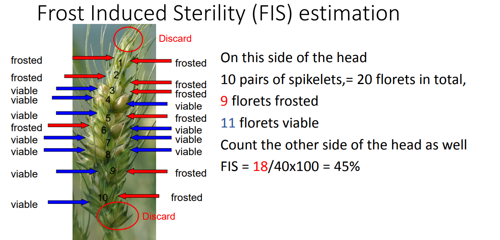Source: Dr Ben Biddulph, DPIRD
Check Your Data
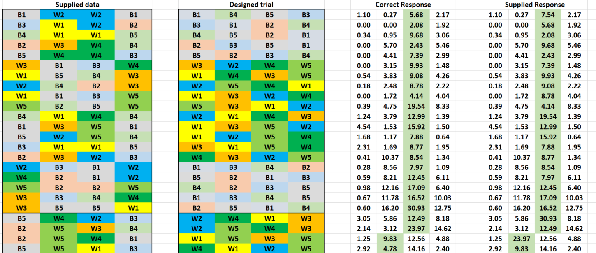Source: Dr Karyn Reeves, SAGI-West
Effective Use of Spreadsheets for Sharing Data With AAGI
Best Practices to Follow
All columns supplied with the trial design should be retained
Every plot needs a unique identifier (e.g., plot number)
Avoid copy-paste (easy to introduce errors)
Ensure embedded equations reference the correct columns
- Or better yet, don’t do calculations in the spreadsheet at all
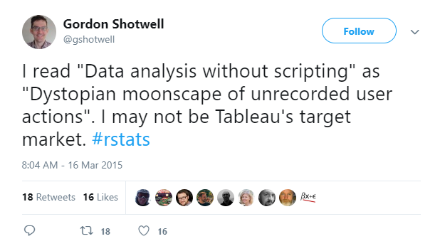
Basic Rules for Data in Spreadsheets
- Be Consistent
- Use the same layout if you have multiple files
- Use the same variable names (also if you have multiple files)
- Only use one variable name, e.g.,
S10
is different thanS 10
Choose Good Names for Things
| Good Name | Good Alternative | Avoid |
|---|---|---|
| max_temp_C | MaxTemp | Maximum Temp (˚C) |
| precipitation_mm | precip | precmm |
| mean_year_growth | MeanYearGrowth | Mean growth/year |
| yield_kg_ha | yield | yield kg/ha |
| observation_o1 | first_observation | 1st Obs. |
Write Dates as YYYY-MM-DD (ISO 8601)
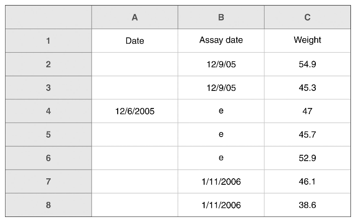A spreadsheet with inconsistent date formats. This spreadsheet does not adhere to recommendations for consistency of date format. From Broman and Woo (2018). Also see https://xkcd.com/1179.
No Empty Cells
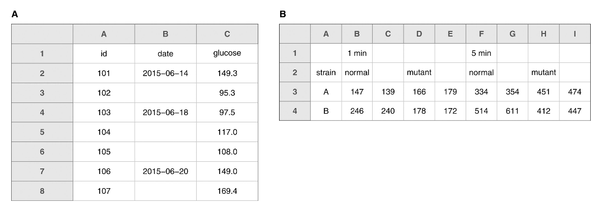Examples of spreadsheets that violate the no empty cells
recommendation. (a) A spreadsheet where only the first of several repeated values was included. (b) A spreadsheet with a complicated layout and some implicit column headers, from Broman and Woo (2018).
Put Just One Thing in a Cell
- e.g., Don’t use
rep-plot
for a header and use1-1
,1-2
…2-1
, in the column, etc. - Do use
rep
andplot
as headers and have the values in separated columns
Make It a Rectangle
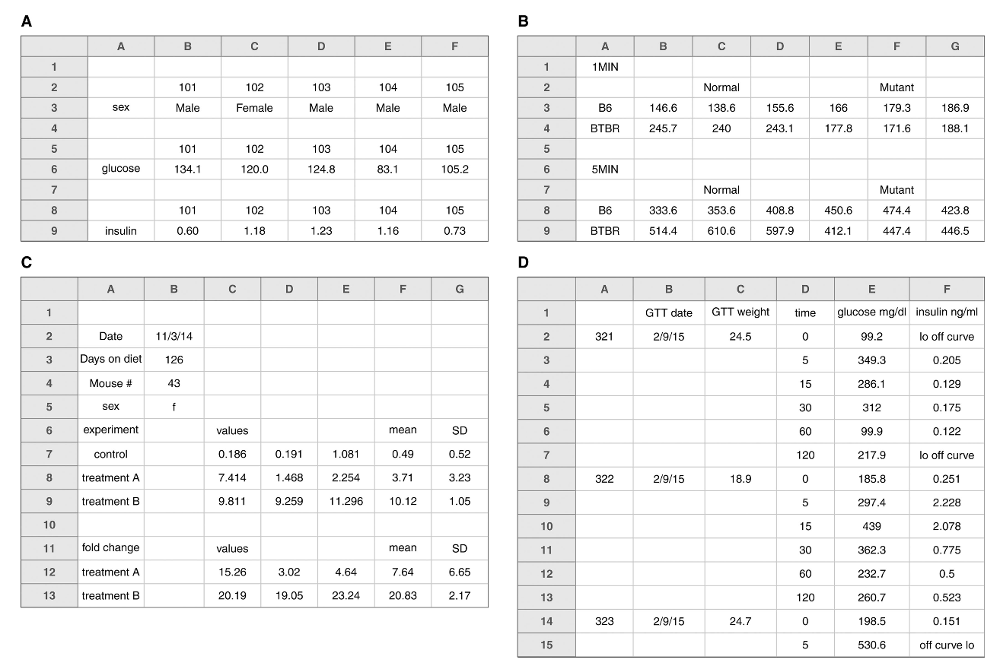Examples of spreadsheets with nonrectangular layouts. These layouts are likely to cause problems in analysis, from Broman and Woo (2018).
Example A, what not to do.
Make It a Rectangle
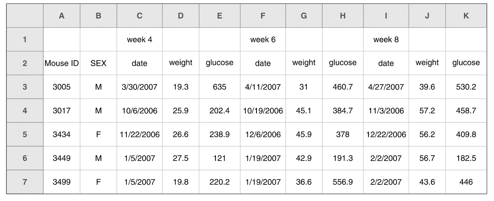A spreadsheet with two header rows. It is better to have a single header row, from Broman and Woo (2018).
Example B, what not to do.
Make It a Rectangle
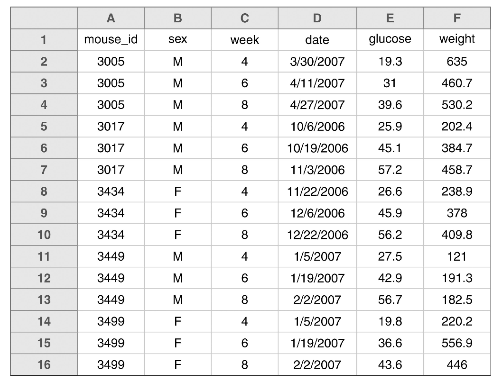An example spreadsheet of the previous example’s data in a rectangular layout, from Broman and Woo (2018).
Yes, do this!
Create a Data Dictionary
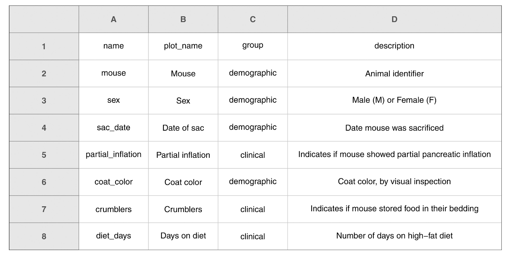An example data dictionary, from Broman and Woo (2018).
Do Not Use Colour as Data
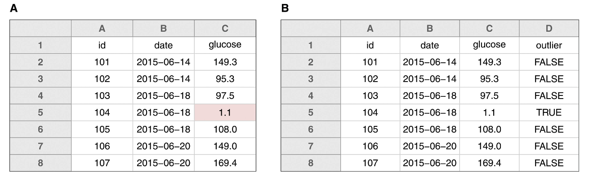Highlighting in spreadsheets.(a) A potential outlier indicated by highlighting the cell.(b) The preferred method for indicating outliers, via an additional column, from Broman and Woo (2018).
Save Data in Plain Text Files (e.g., CSV)
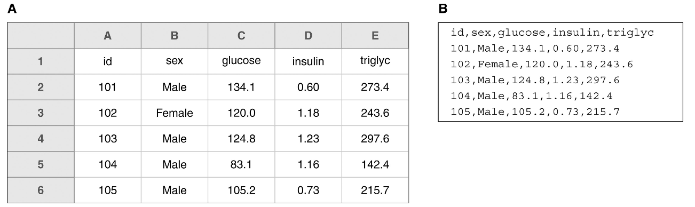(a) An example spreadsheet. (b) The same data as a plain text file in CSV format, from Broman and Woo (2018).
Lastly
- No calculations in the raw data file
- Make backups
- Use data validation to avoid errors
Exercise
Exercise (20 min)
Working with your partner on the experiment you designed this morning.
- Create a trial protocol that details the:
- Treatments and
- Data to be collected.
- Draw or list the spreadsheet headings for the data you will be collecting to send to AAGI.
- Describe the date format you will use,
- Describe what you will use to describe missing data and
- Describe what descriptions need to be included in the data dictionary/protocol for AAGI to refer to.
Thank You
References